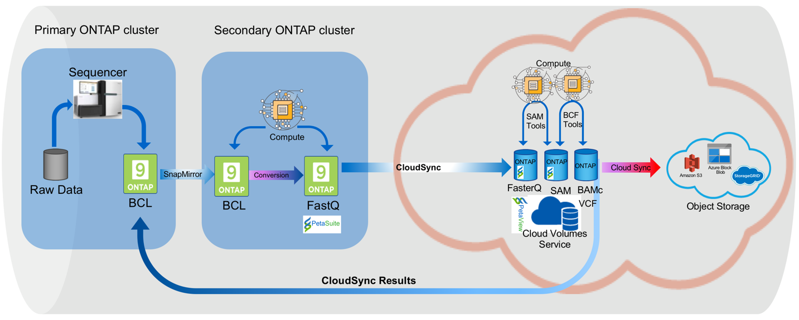
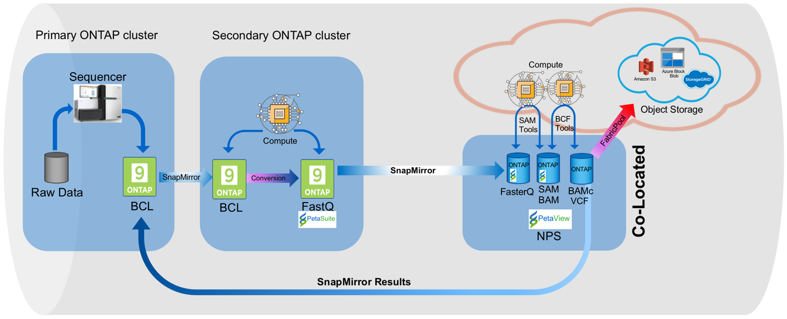

NetApp And PetaGene: Accelerating the Genomics Revolution Edit on GitHub
Authors: Karthik Chinnathambi, Mary Hayes, David LaBrosse, Chad Morgenstern, Justin Spears
Abstract
The objective of this document is to explain how NetApp and PetaGene ‘technology’ helps to accelerate genomic data analysis and bio medical discoveries. It explores how our cloud and on-premise based solutions can simplify genomic research collaboration, reduce research IT cost, and shorten genomic analysis time.
The goal is to achieve true “precision medicine” where doctors and other care givers can provide customized treatments and medications based upon an individual’s unique genetic profile. While the ‘old’ healthcare treatment model of "one-size-fits-all" is still practiced, many clinicians believe that "personalized" care will become the standard around the world.
Benefits Summary
Below is a brief list of the benefits which the NetApp and PetaGene collaboration brings to genomic researchers and bio medical clinicians. We are proud to provide technology and tools which can accelerate discoveries and can improve patient care.
-
Smaller Files = Faster Genomic Data Flows --- NetApp engineers recently confirmed that when PetaGene software shrinks the large genomic files into smaller, more portable files, there are immediate data flow benefits. For example, we verified that the smaller files can be transferred more rapidly across the NetApp Data Fabric. Faster genomic data benefits all stakeholders
-
5X Higher Data Efficiencies --- Another benefit which NetApp engineers verified during the testing is higher levels of data efficiencies. After running the PetaSuite data compression software, NetApp resources reported as much as 5X improvement in space efficiency.
-
Increase in Research Collaboration --- Having smaller files to manage makes it easier and faster to share genomic files between labs and research facilities across campus --- or even around the globe.
-
Cloud Enablement (AWS, Google, Azure, and more) --- NetApp and PetaGene provide multiple options for managing genomic data in cloud environments like AWS, Google, and others. Genomic files can be seamlessly and securely moved to and from the cloud to support a variety of cloud-based workflows. Further, cold data can be tiered to object storage using FabricPool, freeing performance tiers for new sequencing projects.
-
Interoperability of Files without Decompression --- Another benefit is that PetaSuite allows researchers to retain interoperability of existing workflows and formats. Specifically, PetaSuite software allows researchers and clinicians to continue using FASTQ and BAM file representations in their existing tools and pipelines, without needing to decompress first.
-
Reduce Operational Costs via Data Fabric - Life Cycle Management --- PetaGene’s software also helps to decrease research operations costs as it literally shrinks the amount of data which needs to be managed at different stages of its life cycle. Not only do the smaller genomic files enable more efficient data transfers, but they also accelerate data tiering. For example, some research data may need to be archived for short-term (or long-term) access by genomic researchers. Decreasing the size of the files via PetaSuite, PetaGene’s compression software, can save costs and time --- no matter if the data is in a cloud or on-premise. The NetApp Data Fabric model allows researchers to seamlessly migrate genomic data --- where it’s needed --- when it’s needed locally or globally.
Introduction
Scientists and bioinformaticians have long sought ways to reduce the size of the large genomic datasets by using a combination of data compression and reduction techniques. In the past, raw sequencer output had often been stored for extended periods, while bioinformaticians carried out the complex tasks needed in the assembly and alignment of the sequencing data. With these steps complete, the data could be used in variant calling and interpretation which are the vital steps in understanding gene expression and disease.
Today this process is highly automated and has been greatly accelerated through a combination of parallel processing and the availability of reference genomes. There are now a number of compressed genomic file formats that reduce the size of an individually stored genome down to a few tens of gigabytes; work that previously took months or years can now be turned around in little more than a day. This has greatly improved the ability of bioinformaticians to work with and transfer data to clinicians in an efficient and timely manner.
We are now entering the world of personalized or precision medicine. Faster sequencing and more compact datasets have increased the number of individual sequences that can be performed. Individual patient genomes and even their individual diseases, typically cancers, can be sequenced (tumors can and do have their own genetic makeup that can differ from that of the patient). This brings about great hope and opportunity for new insights, while at the same time increasing the pressure on data capacity.
Amplify Storage Efficiency
PetaGene’s software addresses the challenges caused by growing volumes of genomics data. PetaSuite is a set of scalable complementary software tools that significantly reduce the size and cost of NGS data for storage and transfer. It achieves up to 5x reduction (as per NetApp testing) in both storage costs and data transfer times compared to BAM and gzipped FASTQ files. PetaSuite transparently integrates with existing storage infrastructure and bioinformatics pipelines, while PetaLink provides a powerful virtual file access system. PetaLink produces a high performance virtual file view of the compressed file. This virtual file can then be transparently used just like the original file by Linux toolchains, pipelines and genome browsers.
Observed Compression Ratios
| Maximum Compression Ratio | Minimum Compression Ratio | Average Compression Ratio | Std. Deviation |
|---|---|---|---|
4.50 |
1.52 |
2.27 |
0.67 |
Tested on 70 Genomic Data files
Increase Data Mobility
NetApp SnapMirror and CloudSync make it easy to move genomic data across various cloud environments and make it readily available where it is needed. This capability is further enhanced with PetaGene’s unique data compression technique. Three reference designs can be leveraged to efficiently store and access genomic data, improving performance and reducing cost.
At a high level, the overall work flow is as such:
-
Raw genetic data is read by the sequencer, the results are written out in BCL format to an ONTAP cluster.
-
As many companies prefer to split conversion of BCL to FASTQ and BAM formats across separate environments, the BCL files are SnapMirrored into a second ONTAP cluster. Though not strictly necessary, this convention was followed in the reference design.
-
At the secondary site, the BCL files are processed and converted into FASTQ or BAM format.
-
With the BAM and FASTQ files in place, PetaSuite compresses the files converting to BAM to CRAM and FASTQ to FasterQ formats respectively. The space savings discussed above are realized at this stage.
-
The aforementioned compressed files are transferred from the secondary site to either volumes within the NetApp Cloud Volumes Service, a NetApp Cloud Volumes ONTAP Cluster or a NetApp Private Storage (NPS) Cluster. The transfer mechanism is dependent upon the target – CloudSync if NetApp Cloud Volumes Service or SnapMirror if NetApp Cloud Volumes ONTAP or NPS.
-
All post-processing activity is performed in one of the various hyperscaler environments and all file interactions occur against the NetApp storage target.
-
Resulting datasets may be replicated back to the origin data center as desired using either CloudSync or SnapMirror depending on the cloud solution.
-
Aged files may be archived to object storage either in the public cloud [AWS S3, Azure Blob, or a Storage Grid Webscale target] or on premises using StorageGRID Webscale. NetApp CloudSync or FabricPool are recommended to handle the archival process.
Speed, Scale and Simplicity with Cloud Volumes Service
NetApp Cloud Volumes Service is a cloud-native file storage service based on proven NetApp technology. This offering combines enterprise class storage with the simplicity and flexibility of the cloud, resulting in the ability to take your operation from 0TB to 100TB in less than 10 seconds. NetApp Cloud Volumes Service supports the NFS v3 and NFS v4 protocols along with SMB.
For simplified replication into and out of NetApp Cloud Volumes, CloudSync is an intuitive replication and synchronization service. This software-as-a-service (SaaS) offering enables customers to transfer and synchronize data between source and destination of any type or formats, in the cloud or on premises. CloudSync supports NAS data (NFS and SMB), EFS, Amazon S3 and NetApp StorageGRID Webscale Appliance.
Figure 1: Cloud Volumes Service reference design

Control, Protection and Efficiency with Cloud Volumes ONTAP
NetApp Cloud Volumes ONTAP delivers enterprise control, protection, and efficiency to your data with the flexibility of the cloud. Cloud Volumes ONTAP, a software-defined data management service built on the NetApp ONTAP 9 storage operating system, provides a superior universal storage platform that addresses most cloud data needs. Having the same storage operating system in the cloud and on premises delivers the value of a Data Fabric without having to train IT staff in all-new methods to manage data. The SnapMirror features of ONTAP offer a bandwidth efficient data replication and transfer mechanism between clouds and to or from a datacenter.
Cloud Volumes ONTAP provides a data storage solution that fits many different customer requirements –from disaster recovery, development, and test environments to critical applications that require highly available non-disruptive operation, such as production business applications and file services using NFS, SMB, and iSCSI. Setup and management of the Cloud Volumes ONTAP environment is simple and intuitive with NetApp OnCommand Cloud Manager web interface.
Figure 2: Cloud Volumes ONTAP reference design

Freedom and Flexibility with NetApp Private Storage
NetApp Private Storage (NPS) is a cloud-connected storage solution that puts data near the cloud, providing the freedom and flexibility to run your application or workload on cloud compute while maintaining complete control of your data. NPS connectivity options allow you to choose from an expanding global network of cloud service providers, including Amazon Web Services, Google Cloud Platform, IBM Cloud and Microsoft Azure. Using NPS you can easily ensure compliance with HIPAA, GDPR or any other regulatory requirement.
With NPS, your NetApp storage is housed in co-located cloud-connected data centers, next to major networks and in close proximity to all major clouds. Establishing secure, dedicated, high-speed connections to all those clouds is quick and easy, with the added advantage of enhanced performance and reduced cost by bypassing the internet. NetApp makes it easy to move data between clouds and any NetApp data management infrastructure, including public, private, and hybrid clouds. SnapMirror technology provides support for applications to fail over to a secondary system and continue operating, as well as the capability to fail back to the primary location later.
Figure 3: NetApp Private Storage (NPS) design

Technology Comparison
| NetApp Private Storage | Cloud Volumes ONTAP | Cloud Volumes Service | |
|---|---|---|---|
Legal restrictions |
X |
|
|
Data mobility |
X |
X |
X |
Multi cloud |
X |
|
|
Cloudy deployment |
|
X |
X |
Cost model |
Opex & CapEx models available |
OpEx |
OpEx |
Simplicity |
|
|
X |
Feature currency |
X |
|
|
Storage Tiering |
X |
X |
X |
About PetaGene
PetaGene started from a team of Cambridge University PhDs who were working to devise a novel approach to the problem of storing the rapidly growing data associated Genomics. Through Project PetaGene, they created the means to compress huge amounts of genomic data without compromising data quality. PetaGene’s technology goes beyond normal storage data reduction techniques, using insight into the structure of Genomic Data to achieve its industry leading data reduction. For more information visit www.petagene.com or email sales@petagene.com
About NetApp
NetApp is the data authority for hybrid cloud. We provide a full range of hybrid cloud data services that simplify management of data across cloud and on-premises environments to accelerate digital transformation. We empower global organizations to unleash the full potential of their data to expand customer touchpoints, foster greater innovation and optimize operations. For more information, visit: www.netapp.com #DataDriven